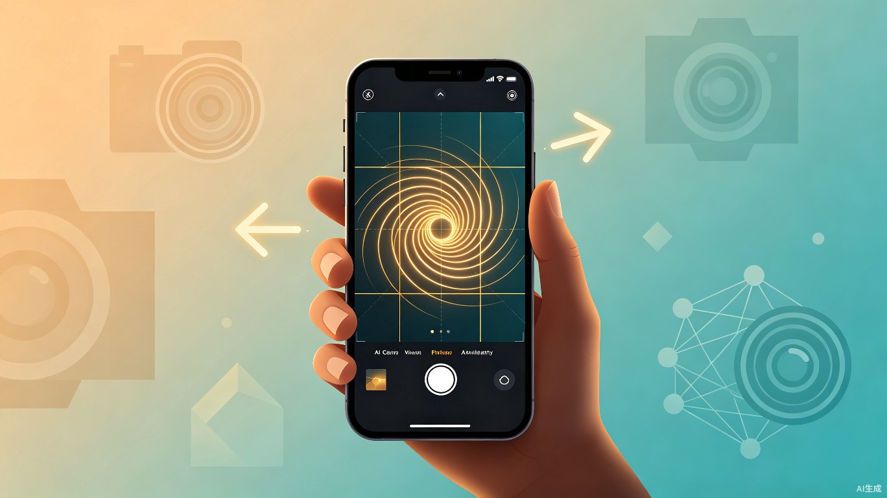
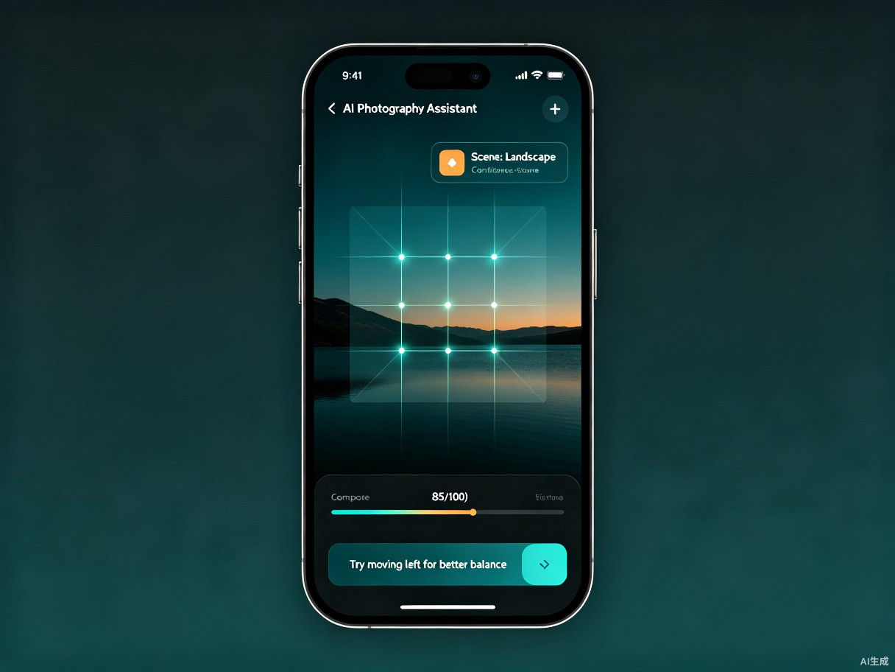

基于 AI 视觉分析的实时摄影指导产品，让普通用户也能拍出专业级照片
全球计算摄影市场 2025 年规模已达 174 亿美元，预计 2034 年增长至 606 亿美元，CAGR 14.9%；AI 相机市场增速更快，CAGR 达 20.17%，2026 年预计突破 189 亿美元[1]。亚太地区占据全球计算摄影市场 43.5% 的份额，中国是核心增长引擎[1]。移动影像市场已从"拍得到"阶段进入"拍得专业"的智能化升级期。
77.2% 的摄影爱好者以手机为主要拍摄设备[2]，但绝大多数用户缺乏摄影基础。现有痛点集中在四个层面：
不知道如何选择拍摄角度和构图方式，同一景点拍出的照片与网络热门作品差距明显
不会摆姿势，拍出的照片动作不自然，缺乏氛围感
请别人帮忙拍照时，构图差、比例失衡、背景杂乱，反复重拍效率极低
手机 AI 摄影功能尝鲜率超 80%，但高频使用率不足 30%[3]，"拍后修图"无法替代"拍前指导"
2026 年行业正经历一次关键转向——从"拍后修图"到"拍前防废片"。华为 XMAGE 最激进，在取景框内提供实时骨骼引导线和 AI 构图建议；Google Pixel 10 的 Camera Coach 借助 Gemini AI 提供情境感知拍摄建议[4]。独立 App 层面，LensMentor、浅影 AI 相机、一相机等产品已开始验证市场。
喜欢用照片记录旅途风景和人文，希望照片有"大片感"但不懂构图，通常独自或两人出行
小红书、抖音等内容平台活跃用户，需要高质量配图提升内容吸引力，对审美有一定要求
情侣、朋友聚会、家庭出游时互相拍照，代拍质量参差不齐是最核心的抱怨点
刚接触摄影，想系统提升拍照水平，需要一个能边拍边学的工具
| 场景 | 频次 | 优先级 | 核心需求 |
|---|---|---|---|
| 旅游打卡 | 高 | P0 | 景点构图参考、机位建议 |
| 人像自拍/他拍 | 高 | P0 | 构图指导、姿势建议 |
| 咖啡店/探店 | 中 | P1 | 氛围感构图、光线评估 |
| 聚会/演唱会 | 中 | P1 | 动态场景抓拍指导 |
| 日常随手拍 | 高 | P1 | 快速出片、美学评分 |
| 社交内容创作 | 中 | P2 | 风格化拍摄、后期衔接 |
当前市场参与者可分为三类：独立摄影辅助 App、手机厂商内置 AI 影像、社交平台拍照功能。三者各有优势，但尚未出现覆盖广泛用户的通用解决方案。
| 产品 | 类型 | 核心能力 | 优势 | 不足 |
|---|---|---|---|---|
| 浅影 AI 相机 | 独立 App | AI 构图引导、姿势引导、美学评分、相册整理 | 语音引导、美学评分反馈直观 | 仅 iOS、市场知名度低 |
| 一相机 | 独立 App | 语音指令交互、大模型 AI 分析、自动调参 | 语音解放双手、分析能力强 | 仅 iOS、需联网、品牌弱 |
| LensMentor | 独立 App | 实时构图引导、曝光建议、姿势引导、内置编辑器 | 功能最全面、拍摄全流程覆盖 | 仅 iOS、非中文市场 |
| PoseMe | 独立 App | 场景模板匹配、姿势引导、Auto Best Take | UGC 模板生态、社交分享完善 | AI 构图深度有限、中国市场弱 |
| 华为 XMAGE | 厂商内置 | AI 构图引导、骨骼引导线、姿势推荐、端侧处理 | 端侧计算不依赖网络、硬件整合深 | 仅限华为旗舰机型 |
| Google Camera Coach | 厂商内置 | 实时构图引导、光线/角度建议、情境感知 | 计算摄影领先、Gemini AI 集成 | 仅 Pixel 手机、引导偏基础 |
| 轻颜相机 | 社交平台 | 姿势引导库（12 类场景）、3:4 构图推荐 | 姿势库丰富、用户基数大 | 仅限姿势引导、无 AI 构图分析 |
一款在拍摄过程中通过实时 AI 视觉分析指导用户构图和拍摄的摄影助手，先以独立 App 验证市场，后续与手机厂商合作集成到系统相机。
无需学习摄影知识，打开相机即可获得专业级构图指导
减少反复重拍次数，让普通用户一次拍摄的成功率显著提高
通过实时反馈和构图评分，帮助用户在拍照中自然提升摄影审美

| # | 功能模块 | 功能描述 | 优先级 |
|---|---|---|---|
| F1 | 实时构图分析 | 在取景框中叠加三分法、黄金分割、对称构图等辅助线和评分，实时反馈当前构图质量，并给出调整方向建议（如"向左移动"、"蹲低拍摄"） | P0 |
| F2 | 场景智能识别 | 自动识别当前拍摄场景类型（人像/风景/建筑/美食/街拍/夜景等），并根据场景切换对应的构图规则和评分标准 | P0 |
| F3 | 构图评分系统 | 基于主体位置、画面平衡、留白比例等维度给出实时构图评分（0-100），帮助用户直观判断当前画面质量 | P0 |
| F4 | 光照评估与建议 | 检测当前光线条件（逆光/侧光/顶光/暗光），给出简单的光线调整建议（如"面向光源"、"等待光线变化"） | P1 |
| F5 | 姿势引导 | 针对人像场景，在取景框中叠加半透明参考姿势轮廓，给出简单的姿态建议（如"侧身 45 度"、"抬起右手"） | P1 |
| F6 | 拍摄模式切换 | 支持"自由拍摄"和"AI 指导"两种模式，用户可随时开关 AI 指导叠加层 | P0 |
| F7 | 相机基础控制 | 提供闪光灯、HDR、前后置切换、网格线开关等基础相机控制功能 | P0 |
| F8 | 照片保存与分享 | 拍摄的照片自动保存到系统相册，支持一键分享至主流社交平台 | P0 |
用户打开 AI 指导模式后，系统以 30fps 采集取景器画面，并行运行场景分类、主体检测和构图分析三个推理管线。分析结果以半透明辅助线和文字建议的形式叠加在取景框上。当构图评分超过 80 分时，系统给出"可以拍摄"的视觉提示，引导用户按下快门。
取景框中显示三层信息：
(1) 构图辅助线：根据当前场景自动选择构图规则（三分法/黄金分割/对称），以半透明线条叠加在画面上
(2) 评分指示器：取景框右上角显示实时构图评分（0-100），颜色随分数变化（红→黄→绿）
(3) 方向建议：取景框底部以图标 + 短文字形式给出调整建议（如箭头向左 + "移动手机向左"）
flowchart TD
A[取景器画面采集 30fps] --> B[并行推理管线]
B --> C[场景分类 MobileNetV3]
B --> D[主体检测 YOLOv8n]
B --> E[人体姿态 MediaPipe]
C --> F[构图分析引擎]
D --> F
E --> F
F --> G{构图评分}
G -->|>= 80| H[绿色提示: 按下快门]
G -->|40-80| I[黄色提示: 调整建议]
G -->|< 40| J[仅显示辅助线]
H --> K[AR 叠加渲染层]
I --> K
J --> K
K --> L[取景框显示]
系统通过轻量级场景分类模型（MobileNetV3）对取景器画面进行实时分类，覆盖人像、风景、建筑、美食、街拍、夜景 6 大类场景。不同场景对应不同的构图规则集和评分权重。场景识别结果以标签形式显示在取景框顶部。
评分基于三个维度的加权计算：
- 主体位置（权重 40%）：主体中心与构图关键点（三分线交叉点/黄金分割点）的距离
- 画面平衡（权重 35%）：左右/上下的视觉重量分布均衡度
- 留白合理（权重 25%）：主体占比、Headroom（头部上方空间）、Lead Room（视线方向留白）
评分以环形进度条 + 数字形式显示在取景框右上角。颜色编码：0-40 灰色（不突出显示）、41-70 黄色、71-100 绿色。当评分从黄变绿时，触发一次轻柔的振动反馈（可关闭）。
flowchart TB
subgraph 移动端
CAM[摄像头采集] --> PRE[预处理: 降采样/归一化]
PRE --> SCENE[场景分类: MobileNetV3]
PRE --> OBJ[主体检测: YOLOv8n]
PRE --> POSE[姿态估计: MediaPipe]
PRE --> LIGHT[光照检测: 传感器+AI]
SCENE --> ENG[构图分析引擎]
OBJ --> ENG
POSE --> ENG
LIGHT --> ENG
ENG --> AR[AR 渲染层: 辅助线+建议]
AR --> UI[取景框叠加显示]
end
subgraph 端侧推理
SCENE
OBJ
POSE
end
subgraph 可选云端
CLOUD[云端模型更新]
CLOUD -.->|OTA| SCENE
CLOUD -.->|OTA| OBJ
end
| 模块 | 技术方案 | 预期延迟 | 说明 |
|---|---|---|---|
| 场景分类 | MobileNetV3 + TFLite/Core ML | < 30ms | 6 类场景，INT8 量化 |
| 主体检测 | YOLOv8n (Nano, 6.3M 参数) | < 50ms | 人/物体/建筑检测 |
| 人体姿态 | MediaPipe Pose (complexity=1) | < 24ms | 33 个 3D 关键点 |
| 光照检测 | 硬件传感器 + AI fallback | < 10ms | 优先读传感器，AI 补充 |
| 推理框架 | iOS: Core ML / Android: ONNX RT | — | 利用 NPU/GPU 加速 |
| 端到端延迟 | 全部管线并行 | < 200ms | 取景器 30fps 不卡顿 |
| 范围 | 内容 |
|---|---|
| 平台 | Android 10+ 优先，iOS 15+ 同步开发 |
| 核心功能 | F1 实时构图分析、F2 场景智能识别、F3 构图评分、F6 模式切换、F7 相机基础控制、F8 照片保存 |
| 构图规则 | 三分法、黄金分割、对称构图 3 种基础规则 |
| 场景覆盖 | 人像、风景、建筑 3 类场景（MVP 验证最常用场景） |
| AI 部署 | 端侧推理为主，不依赖网络（除模型 OTA 更新外） |
| 范围 | 内容 | 计划阶段 |
|---|---|---|
| F4 光照评估 | 详细光照分析和拍摄建议 | V1.1 |
| F5 姿势引导 | 人像姿势模板叠加和动态建议 | V1.1 |
| 更多构图规则 | 引导线构图、框架构图、对角线构图 | V1.2 |
| 更多场景 | 美食、街拍、夜景、室内 | V1.2 |
| 美学评分 | 基于深度学习的综合美学质量评估 | V2.0 |
| 语音指导 | 语音播报构图和姿势建议 | V2.0 |
| 厂商合作 | SDK 形式集成到手机厂商系统相机 | V3.0 |
| 指标 | 定义 | MVP 目标 | 观测周期 |
|---|---|---|---|
| AI 指导模式开启率 | 启动相机后开启 AI 指导的用户占比 | ≥ 60% | 上线 4 周 |
| 单次拍摄评分提升 | 开启 AI 指导前后构图评分的差值 | ≥ 20 分 | 上线 4 周 |
| 重拍率降低 | 开启 AI 指导后，同一场景重复拍摄的次数减少 | ≥ 30% 降低 | 上线 8 周 |
| 7 日留存 | 首次使用后 7 日内再次使用的用户比例 | ≥ 25% | 上线 8 周 |
| 照片分享率 | 通过 App 拍摄并分享到社交平台的照片占比 | ≥ 15% | 上线 8 周 |
| 事件名 | 触发时机 | 用途 |
|---|---|---|
| camera_open | 用户打开相机 | 计算 DAU、使用频次 |
| ai_mode_toggle | 用户开启/关闭 AI 指导 | 计算开启率、使用时长 |
| scene_detected | 场景识别结果稳定输出 | 评估场景分类准确率 |
| photo_taken | 用户按下快门拍照 | 计算拍摄量、评分分布 |
| photo_shared | 用户分享照片到社交平台 | 计算分享率、传播漏斗 |
实现实时构图分析（三分法/黄金分割/对称）、3 类场景识别、构图评分、基础相机控制。Android + iOS 同步发布。目标：1000 名种子用户，AI 指导开启率 ≥ 60%，构图评分平均提升 ≥ 20 分。
新增姿势引导（人像场景）、光照评估与建议、场景扩展至 6 类、构图规则扩展至 6 种。引入美学评分功能。目标：5 万名活跃用户，7 日留存 ≥ 25%。
新增语音指导、个性化构图偏好学习（越用越懂你）、拍摄教程联动、后期编辑衔接。与 1-2 家手机厂商启动 SDK 集成合作。目标：20 万名活跃用户，启动商业化探索。
推出订阅制（高级构图规则/姿势库/美学评分增值功能）、厂商 SDK 授权、旅游/摄影品牌合作。目标：实现盈亏平衡。
参考市场现有产品的定价和付费模式，商业化的核心思路是基础免费 + 增值订阅。
| 模式 | 内容 | 目标 |
|---|---|---|
| 免费版 | 3 种基础构图规则、3 类场景识别、基础评分 | 用户获取和留存 |
| 订阅版 | 全部构图规则、全部场景、姿势引导、美学评分、语音指导、个性化学习 | 核心收入来源 |
| SDK 授权 | 向手机厂商提供 AI 构图引擎 SDK，集成到系统相机 | 规模化收入 |
| 品牌合作 | 与旅游平台、摄影品牌联合营销 | 品牌曝光和额外收入 |
| 风险 | 概率 | 影响 | 应对策略 |
|---|---|---|---|
| AI 构图建议不准 | 高 | 高 | 规则 + 深度学习混合方案；建立评分数据集持续优化；低于置信度阈值时仅显示辅助线不给建议 |
| 中低端机型性能不足 | 中 | 高 | 模型 INT8 量化（体积缩小 50-75%）；低端设备降级为仅三分法辅助线；提供性能检测自动降级 |
| 用户不信任 AI 建议 | 中 | 中 | 将 AI 定位为"参考"而非"指令"；用户可关闭 AI 指导；评分用颜色暗示而非文字评判 |
| 手机厂商内置功能挤压 | 中 | 高 | 双轨策略：独立 App 覆盖全机型 + SDK 集成方案；快速迭代保持功能领先 |
| Android 碎片化兼容 | 高 | 中 | ONNX Runtime 跨平台方案；覆盖主流机型（Top 20 品牌占 90%+ 市场份额）；NPU fallback 到 CPU |